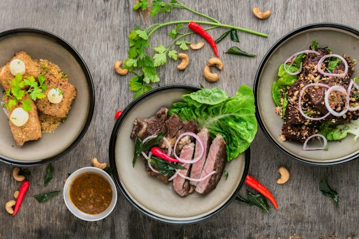
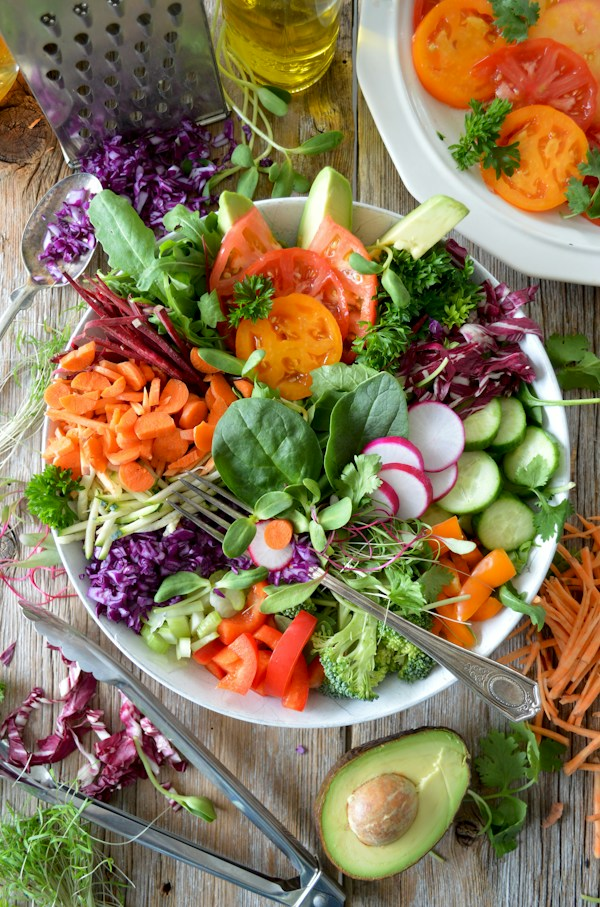
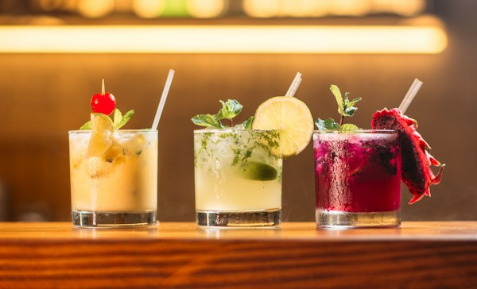

Gastronomía y Arte Culinario
🍽️ Componente Bootstrap: Alerta Especial
¡Bienvenido a la Página 3! Descubre la fusión entre técnica gastronómica tradicional e innovación culinaria contemporánea.La gastronomía trasciende la mera nutrición: es una manifestación cultural viva que narra la historia, el clima y los saberes ancestrales de cada comunidad. A través de la combinación armoniosa de aromas, texturas y presentaciones visuales, el arte culinario despierta emociones y reúne a personas alrededor de una mesa compartida.
El verdadero secreto de cualquier platillo sobresaliente radica en la selección rigurosa de ingredientes frescos, locales y de temporada. El movimiento «de la granja a la mesa» ha revitalizado el aprecio por los pequeños productores agrícolas y los métodos de cultivo ecológicos, garantizando sabores intensos y respetuosos con el medio ambiente.
Especialidades del Chef (Componente Bootstrap: Cards)

Alta Cocina de Autor
Preparaciones sofisticadas donde la precisión térmica y el equilibrio de matices crean una experiencia sensorial única.

Cosecha de Temporada
Vegetales crujientes y hierbas aromáticas recolectados en su punto óptimo de maduración para realzar cada receta.

Repostería Fina
Postres equilibrados que combinan la textura crujiente de masas tradicionales con mousses aireadas y frutas silvestres.
Finalmente, la repostería y la cocina moderna integran conceptos de la física y la química molecular sin perder de vista la calidez del sabor casero. La precisión en los tiempos de fermentación, el control exacto de temperaturas y el emplatado artístico elevan cada plato a la categoría de una obra irrepetible.
Componente Bootstrap: Tabla de Tiempos y Maridajes
| Tiempo de Menú | Descripción | Maridaje Sugerido |
|---|---|---|
| 1. Entrada | Ensalada fresca con emulsión de cítricos y brotes | Vino blanco Sauvignon Blanc |
| 2. Plato Fuerte | Corte sellado al romero con puré trufado | Vino tinto Cabernet Sauvignon |
| 3. Postre | Tarta artesanal de frutos rojos y crema batida | Café espresso o vino espumoso |